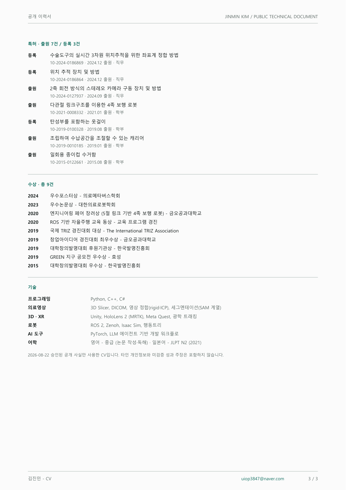

이력서
3D 정합과 로봇 소프트웨어를 실제 시스템으로 연결해 온 이력입니다. 아래 본문은 공개 승인된 사실만 담았고, 같은 내용을 PDF로도 받을 수 있습니다.
김진민Jinmin Kim
3D 정합·의료영상·로봇 시스템을 잇는 로봇SW 엔지니어
수술내비게이션에서 시작해 XR, 3D 정합, 다중 센서 통합, 무인지게차 현장 배치까지 확장해 온 연구개발 엔지니어입니다. 좌표계와 알고리즘을 실제 장치, 사용자 인터페이스, 검증 흐름으로 연결합니다.
학력
-
DGIST
공학석사, 로봇및기계전자공학
- 수술로봇및증강현실연구실 (지도교수 홍재성) — 수술내비게이션팀
- 학위논문: 치아 교합 기반 하악골 골절 정복 계획 최적화 (Virtual Jawbone Reduction Planning based on Dental Occlusion for Mandibular Fracture Surgery)
- 구강악안면 AR 수술 다기관 과제 참여 (2021.06 - 2023.05) — Unity 기반 AR 내비게이션 초기·지원 개발
-
Kumoh National Institute of Technology
공학사, 기계시스템공학
- System & Vision Lab. 학부연구생 (2019 - 2020) · DGIST·UNIST 방학 학부연구프로그램 수료
- 5절 링크 기반 4족 보행 로봇 설계·제작 (2020.04 - 2021.01) — 기구 설계, 기구학 모델링, 제어 구현. 특허 출원과 엔지니어링 페어 수상으로 이어졌습니다.
- 발명동아리 부회장 (2019) — 특허 출원과 발명대회 수상 다수, 교육부 교육기부 우수동아리 지정
경력
-
DIGITRACK Inc.
연구원 · 소프트웨어 개발
DGIST 창업 의료기기·로봇 기업 (마커 기반 3차원 위치추적장치와 소프트웨어), 대구
수술내비게이션 · 의료영상
- 삼성서울병원 구강악안면외과와 3년 이상 협업 — 2023년부터 격주 임상 미팅을 이어오며 정부과제 2건과 개발용역 1건을 메인 실무로 수행했습니다.
- 병원에서 사용 중인 3D Slicer 기반 수술내비게이션 통합 소프트웨어를 전담 개발했습니다 — 수술 계획을 광학 트래킹으로 정합·오버레이하고, HoloLens 2 좌표계 정합으로 AR 수술 가이드를 구현했습니다.
- Meta Quest 기반 환자-의사 상담 XR 앱 개발 — 다중 사용자의 공간·음성·시나리오 상태를 동기화했습니다.
- rTMS 코일 내비게이션 시스템(NeuroPilot) 주도 개발 — 코일 위치 디지털트윈 가시화 (보건의료 정부과제).
- 저선량 C-Arm 3차원 내비게이션 — C-Arm 영상과 3차원 내비게이션 워크플로를 연결하고 담당 기능 범위를 구현했습니다.
- 방사선치료용 3차원 표면유도 호흡추적과 4DCT 정합 담당 (한국전기연구원 대형과제, 2026.06 - ).
- 한국전기연구원·한국기계연구원 등 연구기관 개발용역 다수 수행.
3차원 위치추적장치 소프트웨어
- 자체 광학식 3차원 위치추적장치 SKADI의 API·Viewer 소프트웨어 개발·유지보수 — 국내 수술내비게이션 기업과 연구기관에 납품되는 제품군의 소프트웨어 계층을 담당합니다.
- 3D Slicer 커스텀 앱 템플릿을 작성해 연구기관이 내비게이션 프로토타입을 바로 시작할 수 있게 했습니다.
산업 로봇 — 무인지게차 (2025 - )
- 자체 무인지게차 솔루션(DOTORI)의 안전정책 관리자(safety_manager) 설계·구현, 라이다·ToF 센서의 Zenoh/ROS 2 네트워크 통합.
- 비전 R&D 담당 — 트럭 로딩 비전(ToF+RGB, SAM 계열 세그멘테이션 PoC와 행동트리 연동) 개발.
- 생산 현장 2곳 배치·시운전·운영 — 현장 배치 엔지니어링을 포함합니다.
개인 — AI 활용 (2026 - )
- LLM Wiki — AI 에이전트 기반 개인 지식관리 시스템 구축·운영. 기획·아키텍처·검증은 직접 소유하고 구현의 상당 부분을 AI 에이전트에 위임했으며, 실데이터 마이그레이션과 일일 자동화 루틴을 운영합니다 (TypeScript·Python·PostgreSQL·MCP).
연구 실적
- Development and Clinical Evaluation of an Extended Reality-Based Consultation Platform "OMFS VR Consultation App" for Enhanced Patient Understanding in Orthognathic Surgery
- A Proof of Concept: Optimized Jawbone-Reduction Model for Mandibular Fracture Surgery
- Set-up of Dental Final Occlusion using Haptic Device in Orthognathic Surgery
- 하악골 골절 수술을 위한 치아 교합 기반의 턱뼈 모델 최적화
- Dental Occlusion Model Using Arch Line for Mandibular Fracture Surgery
- 하악골 골절 수술 가이드를 위한 가상 턱뼈 모델 재구성
- Design of Ping-Pong Ball Launcher
특허출원 7건 · 등록 3건
- 등록수술도구의 실시간 3차원 위치추적을 위한 좌표계 정합 방법
- 등록위치 추적 장치 및 방법
- 출원2축 회전 방식의 스테레오 카메라 구동 장치 및 방법
- 출원다관절 링크구조를 이용한 4족 보행 로봇
- 등록탄성부를 포함하는 옷걸이
- 출원조립하여 수납공간을 조절할 수 있는 캐리어
- 출원일회용 종이컵 수거함
수상총 9건
- 우수포스터상
- 우수논문상
- 엔지니어링 페어 장려상 (5절 링크 기반 4족 보행 로봇)
- ROS 기반 자율주행 교육 동상
- 국제 TRIZ 경진대회 대상
- 창업아이디어 경진대회 최우수상
- 대학창의발명대회 후원기관상
- GREEN 지구 공모전 우수상
- 대학창의발명대회 우수상
기술 및 어학
- 프로그래밍
- Python, C++, C#
- 의료영상
- 3D Slicer, DICOM, 영상 정합(rigid·ICP), 세그멘테이션(SAM 계열)
- 3D · XR
- Unity, HoloLens 2 (MRTK), Meta Quest, 광학 트래킹
- 로봇
- ROS 2, Zenoh, Isaac Sim, 행동트리
- AI 도구
- PyTorch, LLM 에이전트 기반 개발 워크플로
- 어학
- 영어 - 중급 (논문 작성·독해) · 일본어 - JLPT N2 (2021)
공개 승인된 사실만 싣습니다. 타인 개인정보와 미검증 성과 주장은 포함하지 않습니다.
PDF 판본


